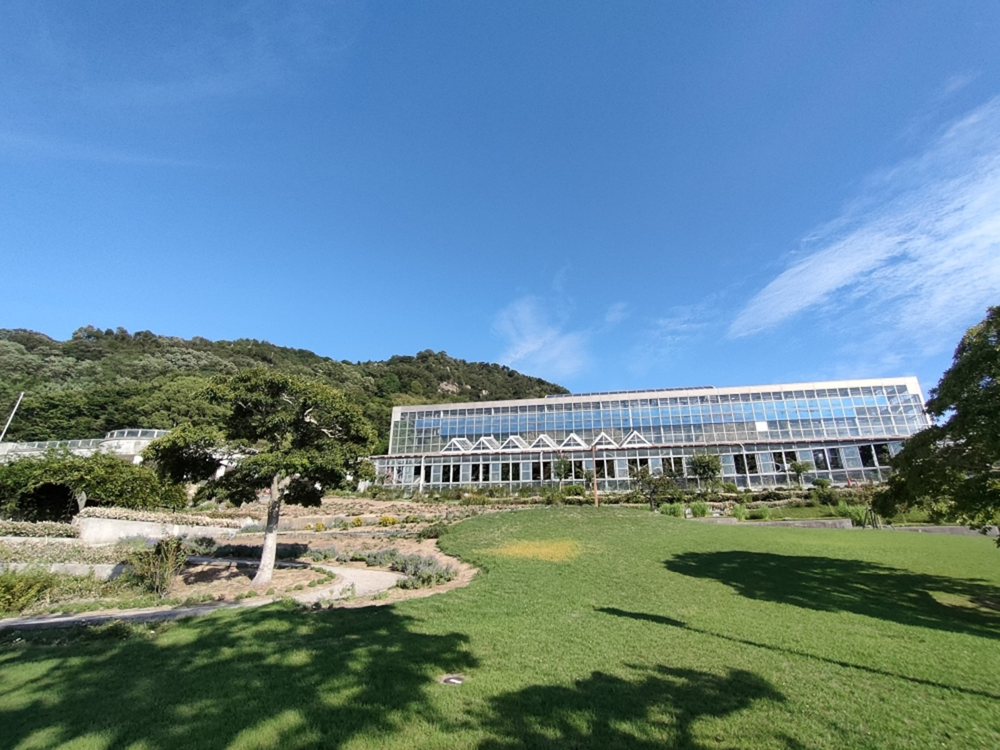
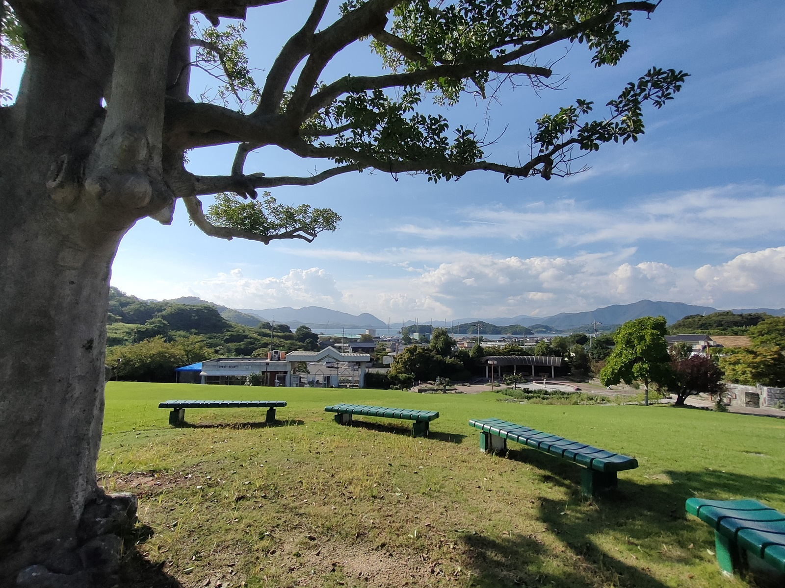
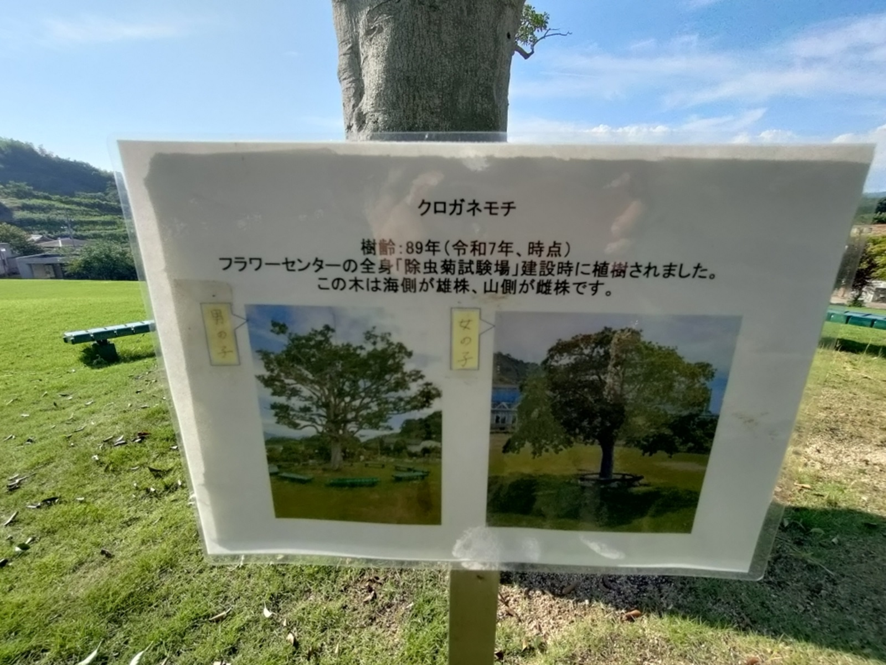
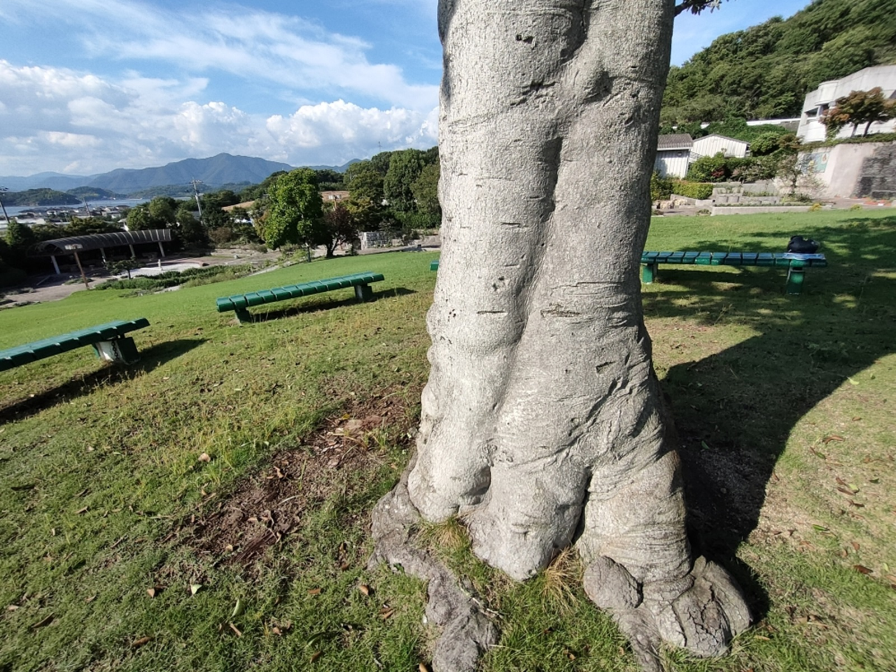
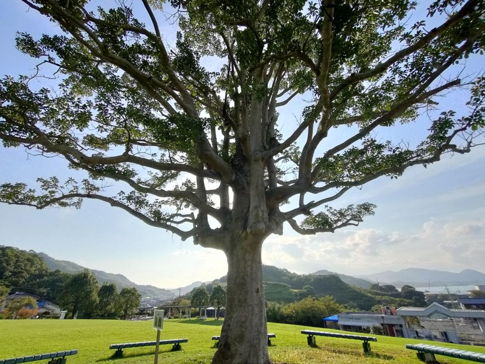

0010 木陰ぼっこ

こんばんは、hanaponです。
ポタリング中に、ふとユックリしたくなり、因島はフラワーセンターへ↓。

芝生の丘を越えると縁起が良い木とされている「くろがねもち」の木がありました。サムネイル画像のように、木陰が私たちを守ってくれるようなイメージを受けたのでシェアしたくなりました！。
くろがねもちの周りには円を描くようにベンチが並んでおり、木陰になるベンチを選んでは木陰ぼっこをするのです↓。

立て看板には、この木の海側が雄株、山側が雌株と書いてあり↓

なるほど、よくよく見てみると、
雄株が雌株を抱き寄せ、口づけを・・・？！
さらには、（私には）雌株の株元には赤ちゃんが生まれているように見えるのです
（右下の楕円が赤ちゃんの頭）↓。

というわけでスマホの電源を切って「縁起の良い木のもとで休む」ことに。

一人で休んでも良い波動が感じられますし、ペアならより良い未来、”こうのとり”がやってくるかも？！（個人的な感想＆妄想なので、ご自身で体感されてみてくださいませ（笑））
この場所は流行りそうな。
くろがねもちの縁起性については検索してみてくださいね。
赤い実もなるようなので、その頃また行ってみましょーぃね。
では、またね。